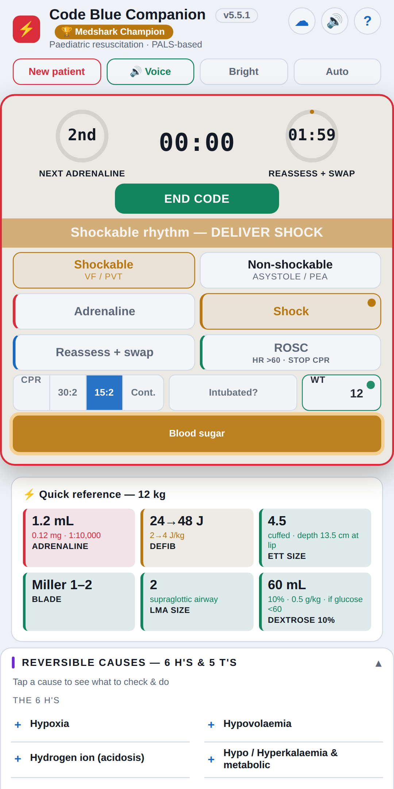

Clinical software for the critical minutes of children’s care.
PediaOS builds decision-support and simulation-training tools for pediatric emergency and critical care — so clinicians have the right dose, the right step and the right timing at the bedside, even in the middle of a resuscitation.

Tools for pediatric teams
Three are live and in use; a fourth is in development. All run in the browser, install to the home screen and work offline.
Built for the bedside
Fast under pressure
Big targets, minimal typing, and the next action surfaced before the team has to look for it.
Guideline-aligned & transparent
Built on published pediatric guidelines, with every dose and cap shown so a clinician can verify it.
Safe by design
Decision support, never a replacement for clinical judgment. No patient identifiers are collected, and data is access-controlled.
For hospitals & institutions
Bring PediaOS tools to your emergency department, PICU, NICU or wards with an institutional licence, so your whole team works from the same tool and its code logs are kept in one place.
- Institutional accessOne login for your department, with saved code logs for debriefing.
- Onboarding & trainingHelp getting your team started on the tools.
- Emergency access, alwaysThe resuscitation tools never lock during an emergency.
Clinician-built technology for children’s health
PediaOS is a pediatric health-care technology venture based in Tamil Nadu, India. We design clinical decision-support and training software for the people who care for acutely ill children — pediatricians, emergency physicians, residents and nurses.
PediaOS began in 2026 with Code Blue Companion, built from first-hand experience of pediatric resuscitation: in the first minutes of an arrest, too much depends on memory and mental arithmetic. Our tools take that load off the team, so they can focus on the child.
Code Blue Companion won the Medshark Champion Award (Best Pitch) at the ANBAI National Conclave 2026, Bengaluru.
Contact us
Institutional licences, partnerships, support or privacy requests — one address for all of them.